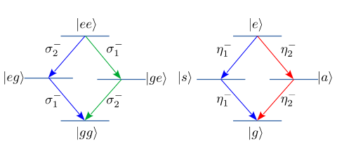
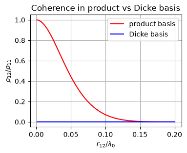

9.3. Dimer QME: Diagonalization#
In the previous section, we numerically evaluated the dissipator with off-diagonal terms. We can simplify the dissipator before numerical calculation by diagonalizing \(\Gamma_{ij}\).
9.3.1. Diagonalization#
First, we diagonalize \(\mathcal{D}^{e}\).
Consider the matrix
The basis vectors are
It is trivial to diagonalize (9.11). The eigenvalues are \(\lambda_{\pm} = \gamma_{0}\pm \Gamma_{12}\) and the corresponding eigenvectors are \(u_{\pm} = \frac{1}{\sqrt{2}}\begin{pmatrix} 1 \\ \pm 1\end{pmatrix}\). Here we used \(\Gamma_{12} = \Gamma_{21}\).
From Eq. (9.12), we obtain the new collapse vectors:
\eta^{+}{1} = \frac{1}{\sqrt{2}} \left (\sigma^{+}{1} + \sigma^{+}{2}\right), \qquad \eta^{+}{2} = \frac{1}{\sqrt{2}} \left (\sigma^{+}{1} - \sigma^{+}{2}\right) $$
With these collapse operators, the dissipators can be written as
We just change the basis and thus no new physics is introduced. Both the product basis and the Dicke basis produce exactly the same density matrix as a solution to the master equation. However, we have two different views of the same processes.
9.3.2. Ingerpretation of the collapse operators#
The collapse operators \(\sigma^{\pm}_{j}\) describe the transitions between \(|e\rangle\) and \(|g\rangle\) in each emitter. What transitions the new collapse operators \(\eta^{\pm}_{j}\) describe? Using the Dicke basis set (9.2),
which can be interpreted as follows. The collapse operator \(\eta^{-}_{1}\) represents two transitions, one from \(|e\rangle\) to \(|s\rangle\) and the other from \(|s\rangle\) to \(|g\rangle\). These two processes form emission channel 1: \(|e\rangle\Rightarrow|s\rangle\Rightarrow|g\rangle\) (blue arrows in the right panel of Fig. 9.1). Similarly, \(eta^{-}_{2}\) represents emission channel 2: \(|e\rangle\Rightarrow|a\rangle\Rightarrow|g\rangle\) (read arrows in the right panel of Fig. 9.1). Compare them with the emission channels expressed in the product basis. In the product basis, each channel involves both \(\sigma^{-}_{1}\) and \(\sigma^{-}_{2}\), which creates interference between \(\sigma^{-}_{1}\) and \(\sigma^{-}_{2}\). That is the origin of the off-diagonal term \(\Gamma_{12}\). In the Dicke basis, however, the channels are independent and the off-diagonal terms are absent.
The other collapse operator \(\eta^{+}_{j}\) is the Hermite conjugate of \(\eta^{-}_{j}\). Hence, \(\eta^{+}_{j}\) represents the time-reversal of \(\eta^{-}_{j}\). Just revere the direction of the arrows in Fig. 9.1.
{kind=link}

Fig. 9.1 Left: Spontaneous emission channels expressed in the product basis. Right: Spontaneous emission channels expressed in the Dicke basis. When \(\Gamma_{12}=\gamma_{0}\), the red channel disappears.#
9.3.3. The dark state#
In the product basis view, the intensity of radiation from the two channels is identical. In the Dicke basis view, channel 1 has emission rate \(\gamma_{0}+\Gamma_{12}\) and channel 2 has \(\gamma_{0}-\Gamma_{12}\). Hence, channel 1 has stronger emission than channel 2. The difference is small when the two emitters are far apart since \(\Gamma_{12} = 0\). On the other limit, \(\Gamma_{12} \rightarrow \gamma_{0}\). Interestingly channel 2 vanishes in this limit. This means the state \(|a\rangle\) cannot be reached by emission or absorption. No light is emitted via channel 2 and thus the state is called a dark state. WE will discuss the details in Chapter 11.
9.3.4. Coherence between channels.#
In the following code, we construct a quantum master equation using \(\eta^{\pm}_{j}\) with the corresponding transition rate as collapse operators. Then, solve it using QuTiP. Unlike the previous case with \(\sigma^{\pm}_{j}\), we don’t have to construct a Liouvillian super operator since the off-diagonal term is absent. Although the expression of the master equation is different, mathematically it is the same as the one used in Chapter 9.2. Hence, we should get the exactly the same steady state density matrix. By plotting the off-diagonal element \(\rho_{eg,ge}\), we confirm that the density matrix is the same as before. Then, we switch to the Dicke basis. The off-diagonal element \(\rho_{sq}\) between \(|s\rangle\) and \(|a\rangle\) is always 0 regardless of the distance \(r_{12}\). Hence, \(|s\rangle\) and \(|a\rangle\) are completely incoherent. This is consistent with the fact that there is no off-diagonal terms in the dissipators with \(\eta^{\pm}_{j}\).
# This code block defines functions to be used in the later code
import matplotlib.pyplot as plt
import numpy as np
from qutip import *
# parameter values
omega0 = 1.0
gamma0 = 0.1
omega12 = 0.1*omega0
temperature = 1.0
theta = np.pi/4
NT = 1/(np.exp(omega0/temperature)-1)
# define operators in 4d Hilbert space
i2 = qeye(2)
sz = [tensor(sigmaz(),i2),tensor(i2,sigmaz())]
sp = [tensor(sigmap(),i2),tensor(i2,sigmap())]
sm = [tensor(sigmam(),i2),tensor(i2,sigmam())]
# product basis
u=[]
u.append(tensor(basis(2,0),basis(2,0)))
u.append(tensor(basis(2,1),basis(2,0)))
u.append(tensor(basis(2,0),basis(2,1)))
u.append(tensor(basis(2,1),basis(2,1)))
# Dicke basis
v=[]
v.append(u[0])
v.append((u[1]+u[2])/np.sqrt(2))
v.append((u[1]-u[2])/np.sqrt(2))
v.append(u[3])
# define the Hamiltonian with dipole-dipole coupling
def system_hamiltonian(omega0,omega12):
H = 0.5*omega0*(sz[0]+sz[1])
H += omega12*(sp[0]*sm[1]+sp[1]*sm[0])
return H
# define the dissipator with off-diagonal terms
def collaps_ops(omega0,gamma0,gamma12,temperatur):
gamma_s = gamma0 + gamma12
gamma_a = gamma0 - gamma12
ep = [(sp[0]+sp[1])/np.sqrt(2),(sp[0]-sp[1])/np.sqrt(2)]
em = [(sm[0]+sm[1])/np.sqrt(2),(sm[0]-sm[1])/np.sqrt(2)]
c_ops = []
c_ops.append(np.sqrt(gamma_s)*(NT+1)*em[0])
c_ops.append(np.sqrt(gamma_a)*(NT+1)*em[1])
c_ops.append(np.sqrt(gamma_s)*NT*ep[0])
c_ops.append(np.sqrt(gamma_a)*NT*ep[1])
return c_ops
# define Gamma_12
def Gamma12(r12,theta):
x=2*np.pi*r12
y=(1-np.cos(theta)**2)*np.sin(x)/x + (1-3*np.cos(theta)**2)*(np.cos(x)/x**2 - np.sin(x)/x**3)
return y*3/2
# calculate the off-diagonal element of steady state
x = []
rho_prod = []
rho_dicke = []
times = np.linspace(0,100,200)
for k in range(1,201):
r12=k/1000
gamma12 = Gamma12(r12,theta)*gamma0
H = system_hamiltonian(omega0,omega12)
c_ops = collaps_ops(omega0,gamma0,gamma12,temperature)
psi0=tensor(basis(2,0),basis(2,0))
result=mesolve(H,psi0,times,c_ops)
rho_p = result.states[-1]
# rho_p = steadystate(H,c_ops)
rho_d = np.zeros((4, 4), dtype=complex)
for i in range(4):
for j in range(4):
rho_d[[i],[j]] = rho_p.matrix_element(v[i],v[j])
x.append(r12)
rho_prod.append(rho_p)
rho_dicke.append(rho_d)
y0 = [matrix[1][2].real/matrix[1][1].real for matrix in rho_prod]
y1 = [matrix[1][2].real/matrix[1][1].real for matrix in rho_dicke]
# plot the results
plt.figure(figsize=(4,3))
plt.title("Coherence in product vs Dicke basis")
plt.plot(x,np.abs(y0),color='r',label="product basis")
plt.plot(x,np.abs(y1),color='b',label="Dicke basis")
plt.legend(loc=1)
plt.xlabel(r"$r_{12}/\lambda_{0}$")
plt.ylabel(r"$\rho_{12}/\rho_{11}$")
plt.grid(True)
